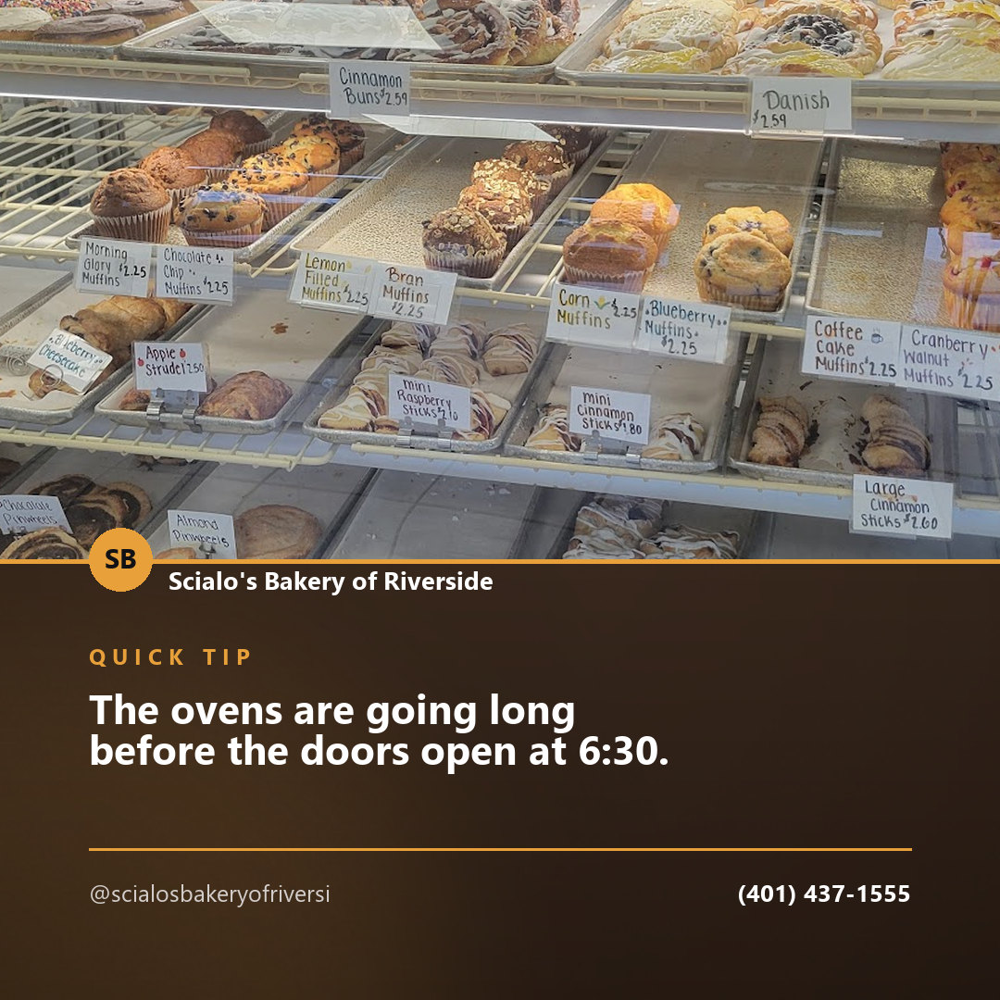
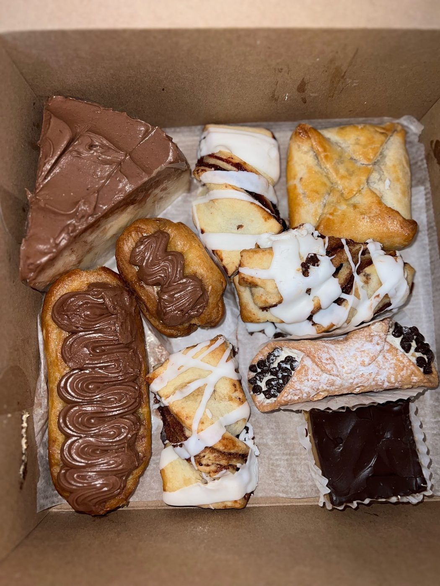
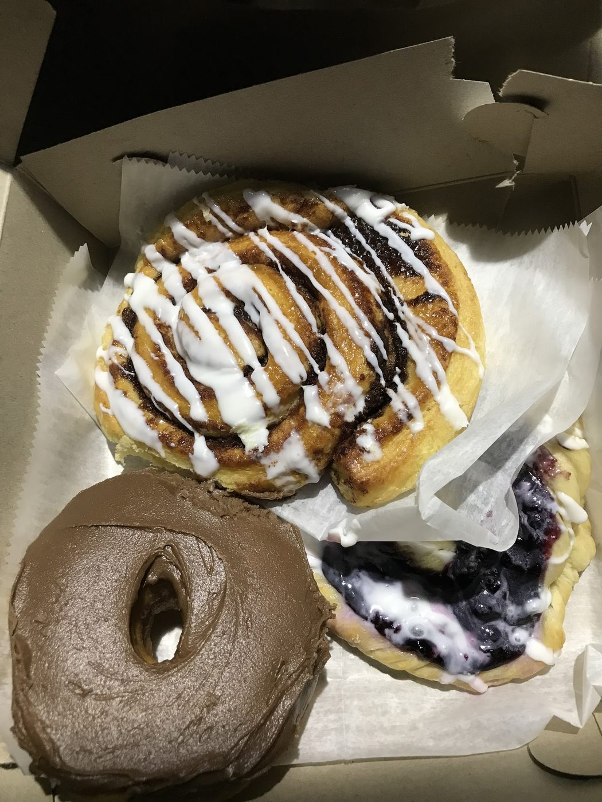
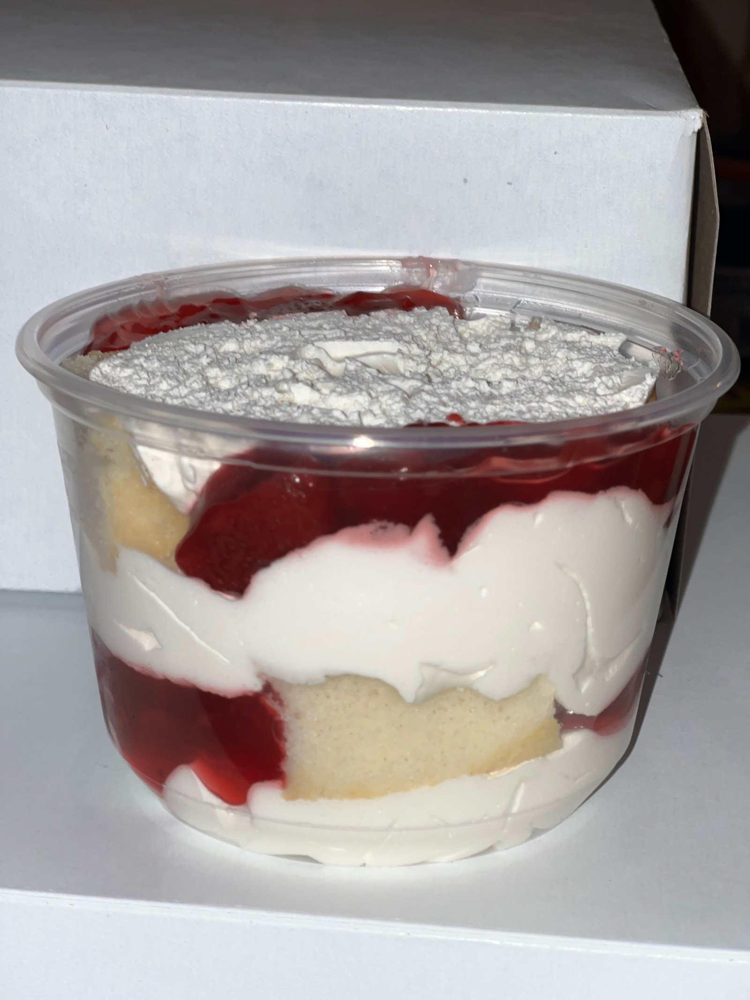

hours · Facebook
The ovens are going long before the doors open at 6:30. If you are heading down Willett Ave early, there is fresh bread, hot coffee, and a full case of pastries waiting for you.
Scialo's Bakery of Riverside is a counter and a full case at 202 Willett Ave. Muffins, danish, cinnamon buns, turnovers, pinwheels and cannoli — you can see the whole shelf before you decide.
Three more pictures from the shop — what a box looks like when it leaves, and what a piece of it looks like up close.



Ordering a box for a house full of people, or checking whether something is still on the shelf? Call the shop — it is the fastest answer you will get.
(401) 437-1555Content